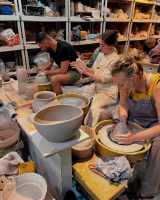
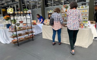
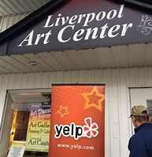
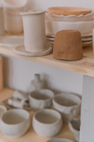
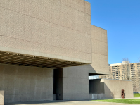
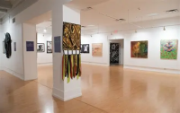

YMCA of Central New York
Multiple locations
Short hand-building sessions at branch locations around the county; check each branch schedule before signing up.
Seasonal
Made by Hand
A short, hand-checked list of places around Syracuse where you can take a ceramics or art class, or just go look at pots.
Prices and schedules change every season, so call ahead before you drive out. Everything below is within about 20 minutes of downtown.

Multiple locations
Short hand-building sessions at branch locations around the county; check each branch schedule before signing up.
Seasonal

Open studio memberships and beginner wheel classes on the near west side; drop in Saturday morning to try a wheel.
All levels

Evening drawing and watercolor classes for adults and teens, with paper, pencils and paint provided.
Teens & adults

A shop and studio in Armory Square that runs weekend sketching workshops; browse the supply wall first.
Browse

The museum’s ceramics collection is one of the largest in the country; admission to the galleries is free.
6,000+ ceramics

Rotating exhibitions from local and national artists, with an opening reception at the start of each season.
Rotating shows